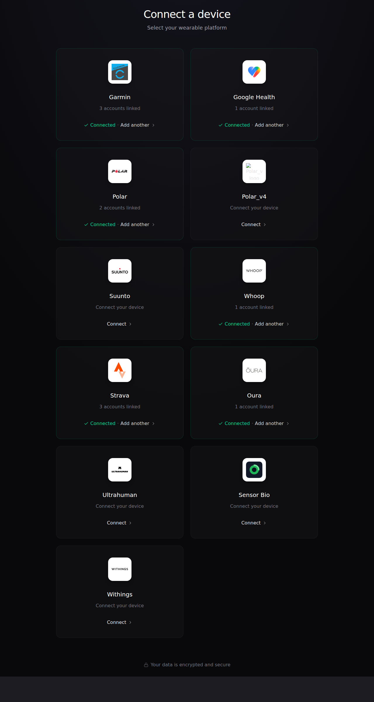
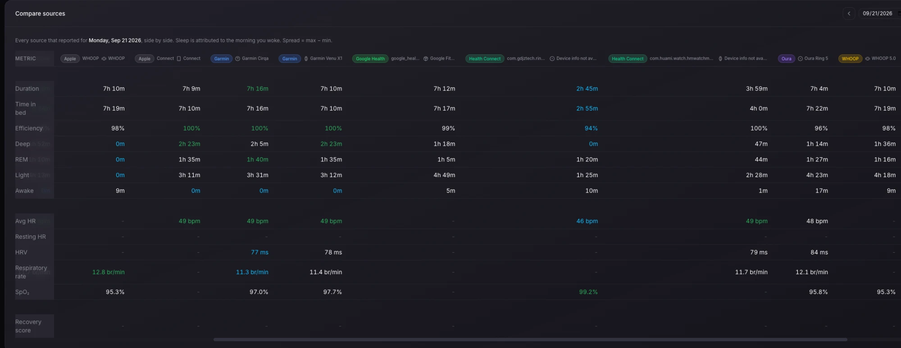
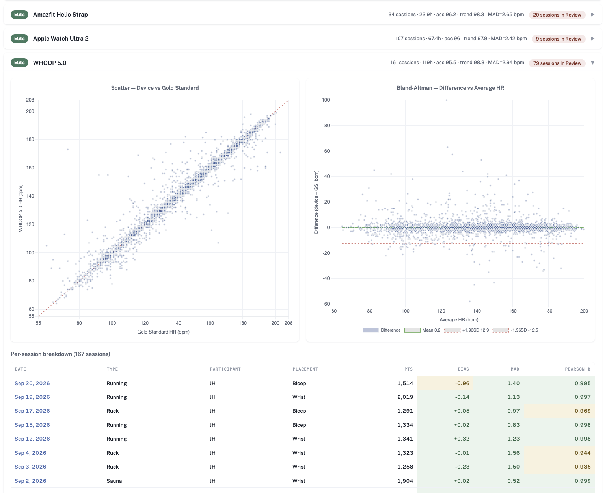
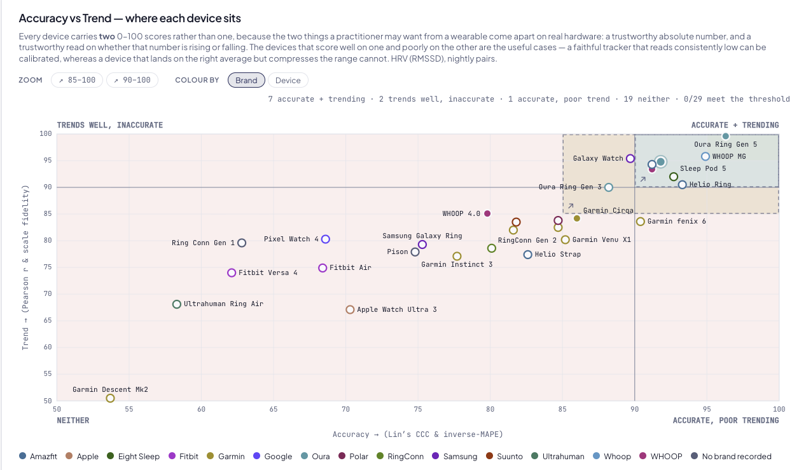

Open Wearables
WHOOP integration walkthrough
Screenshots of how this deployment requests, stores and presents WHOOP data, prepared for the WHOOP Developer Platform review.
Open Wearables is an open-source platform that unifies data from multiple wearables behind a single API. This deployment is operated for exercise physiology research: sleep and exercise data from WHOOP are aggregated alongside data from the other devices the same member wears, so that measures of the same night or the same session can be compared across devices and analysed over time.
Members connect their own WHOOP account through OAuth after giving informed consent, and can disconnect at any time. Data is stored on infrastructure we control, is not sold or shared with third parties, and is deleted on request. WHOOP is identified as the source everywhere WHOOP data is displayed.
Scopes and what each one is used for
| Scope | Used for |
|---|---|
read:recovery | Recovery score, HRV and resting heart rate shown on the member dashboard and used for day-to-day readiness trends. |
read:sleep | Sleep duration, stage totals, sleep performance and respiratory rate, compared against the member's other sleep-capable devices. |
read:cycles | Daily strain and energy expenditure, used as the daily training-load summary. |
read:workout | Workout type, duration, strain and heart-rate summaries, matched to sessions recorded by other devices. |
read:body_measurement | Height, weight and max heart rate, used to normalise metrics across members. |
read:profile | Identifies the connected WHOOP account so records are attributed to the right member. |
1. Connecting a WHOOP account

Provider connection screen
The member chooses WHOOP from the list of supported providers. Selecting
it starts the OAuth 2.0 authorization code flow against
api.prod.whoop.com; no credentials are ever entered in this
application.

WHOOP authorization
WHOOP's own consent screen, showing the scopes being requested. The member authorizes on WHOOP's domain and is returned to the registered redirect URI, where the authorization code is exchanged for tokens server-side.

Connection management and revocation
Once connected, the member sees the connection status, when it last synced, and a disconnect control that revokes the tokens and stops all further data collection.
2. What the member sees

One night, every source side by side
WHOOP sleep and recovery data — duration, time in bed, efficiency, deep / REM / light / awake totals, HRV, respiratory rate and SpO2 — in the rightmost column, next to every other source that reported for the same night. WHOOP is labelled by name and device model in the column header. This is the view members come here for: no single vendor's app can show it.

Agreement against a reference standard
WHOOP 5.0 heart rate plotted against a chest-strap reference across 161 sessions and 119 hours of paired recording, with the corresponding Bland–Altman plot (bias 0.2 bpm, limits of agreement −12.5 to +12.9 bpm, MAD 2.94 bpm) and a per-session breakdown by activity type and sensor placement. This is the analysis the platform exists to support.

Where each connected device sits
Every device a member has connected, scored on absolute accuracy and on trend fidelity against the reference standard, so a practitioner can see which measures from which device are safe to act on.
How data is requested and stored
- OAuth tokens are held server-side only and refreshed automatically; the client secret is never exposed to the browser or to any mobile client.
- Data is retrieved from the documented v2 endpoints —
/v2/activity/sleep,/v2/recovery,/v2/cycle,/v2/activity/workoutand/v2/user/measurement/body— and normalised into the platform's shared schema. - Records are stored on infrastructure operated by this deployment. Nothing is sold, shared with third parties, or used for advertising.
- Disconnecting revokes the tokens and stops collection; on request, previously collected WHOOP data is deleted.
WHOOP is a trademark of WHOOP, Inc. This is an independent integration built on the WHOOP Developer Platform and is not endorsed by WHOOP, Inc.